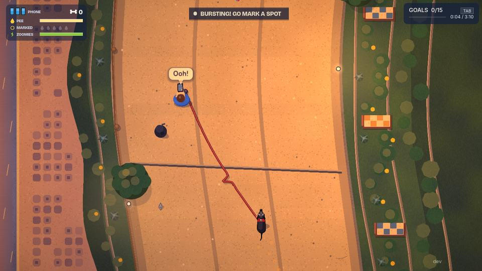
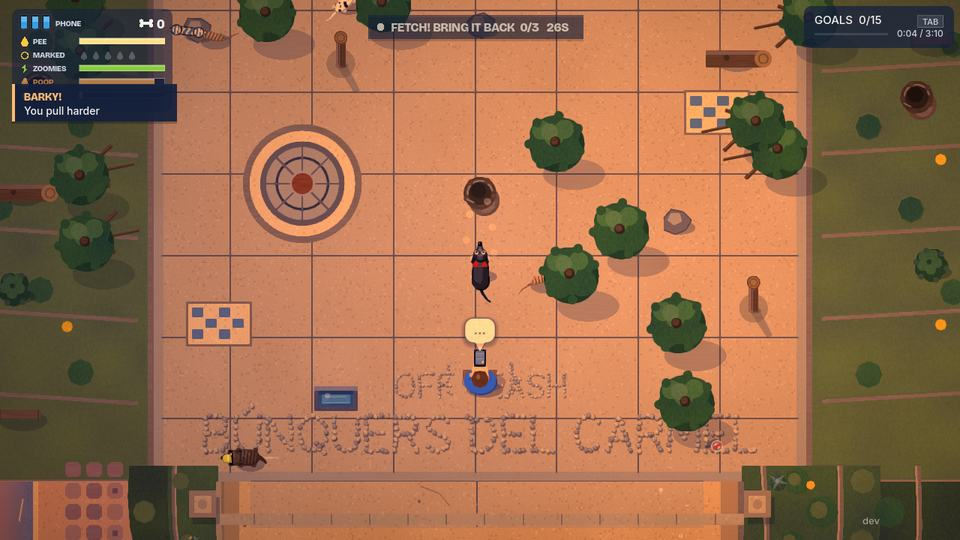

The sunset overlook above the city
Dusk light over steep Carmel staircases and outdoor hill escalators climbing up to Turó de la Rovira's old concrete anti-aircraft batteries. Sunset blankets, patatas bravas and a full 360-degree view of Barcelona wait at the summit if your human looks up.

